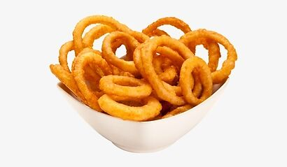

Crispy Onion Rings

Description
A recipe to make crispy onion rings as a side-dish and snacks.
The recipe consists of flour, cornstach, potato flakes, pepper, bread crumbs and more.
Ingredients
- 1/2 all-purpose flour
- 1/4 cup cornstarch
- 2 tablespoons dry potato flakes
- 1/8 teaspoon cayenne pepper, or to taste
- 1 cup chilled club soda
- 2 cups panko bread crumbs, or as needed
- 2 cups vegetable oil for frying
- 2 large onions, cut into 1/4-inch thick slices and seperated into rings
- fine salt to taste
Steps
The steps required to make the crispy onion rings.
- Whisk together flour, cornstarch, dry potato flakes, and cayenne pepper in a large bowl. Whisk in club soda to make a smooth batter.
- Place panko bread crumbs in a shallow bowl.
- Heat oil in a deep fryer or large saucepan to 350 degrees F (175 degrees C).
- Place a few onion rings at a time into the bowl of batter and turn to coat all sides with batter.
- Remove onion rings from batter and place into pan of panko bread crumbs; turn to coat completely with crumbs.
- Cook a few rings at a time in the hot oil until golden brown, about 2 to 3 minutes.
- Transfer to a cooling rack set over paper towels to drain. Season with salt to taste and serve.
Follow the steps, and you'll find yourself surrounded with crunchy and crispy onion rings.